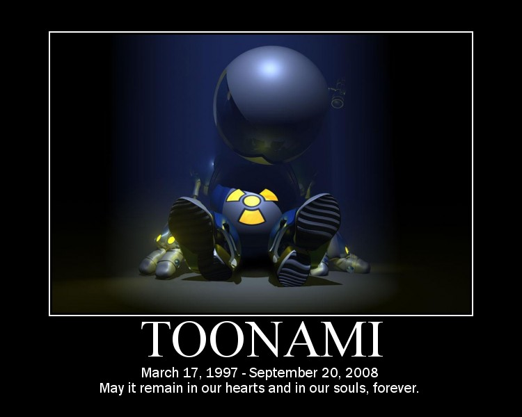

The Internet is Serious Business!
Home > Television > Cartoon Network > Toonami > Watching Toonami's Final Broadcast
On the evening of Saturday, 20 September 2008, I tuned in to Toonami like I did every Saturday night. By then, I had been watching the channel's Toonami block regularly—and even religiously—for many years, and was expecting this latest Saturday night broadcast to be just another routine one. After the night's last show (a Samurai Jack episode) finished airing a few minutes before 11 P.M., I suddenly found myself witnessing T.O.M. informing all of us that this was Toonami's final broadcast.
I can still clearly remember what I felt in the few minutes after I saw that announcement, which was a sense of utter disbelief. By the middle of 2008, I had noticed that lately Toonami was not as great as it used to be: the block's hours had been cut back from four hours (formerly 7 P.M. to 11 P.M.) to two hours (now 9 P.M. to 11 P.M.) on Saturday nights only (and before that, it was airing something like two hours every weekday), there hadn't been very many new shows starting on it, and even Naruto (which had by then very likely become Toonami's centerpiece) had finished airing its main storyline episodes many months ago and was now deep into the less-interesting filler episodes. Still, though, there was absolutely no prior indication or announcement that the block would be ending that night; the block's opening sequence and the bumpers for each show aired just as before, and so I was—along with probably many other fans—completely caught off guard by the suddenness of it.
For me, Toonami had at that point become such a central part of Cartoon Network, and even of my entire television-watching habits as a whole, that I could not imagine TV without it. The next day (according to the last modified date of the image below), I was so struck by this loss that I even made a (somewhat melodramatic) demotivator honoring Toonami:

Afterwards, I recall going online to CartoonNetwork.com quite often to check the Saturday programming schedule. Although Toonami had ended, there was a span of a few months thereafter in which new Naruto episodes continued to be shown weekly on Saturday nights at right around the time slot formerly occupied by Toonami. After January 2009, though, even these stopped airing (despite the fact that the last few episodes hadn't yet aired in the United States), but even then I remember still tuning in to Cartoon Network for a few more Saturday nights, in the hope that Naruto (or even Toonami) might once again re-appear—watching the block regularly every Saturday had by then been a ritual for me for years, and it felt fundamentally off to not devote one night every week to it. Eventually, however, I finally accepted (though with much sadness) that Toonami had ended, and stopped setting aside my Saturday nights to watch it.


 All written materials on this Web site are my own, and all are released under the Do What the Fuck You Want to Public License Version 2.
All written materials on this Web site are my own, and all are released under the Do What the Fuck You Want to Public License Version 2.
This page last modified on 29 March 2021.